Situación inicial
Las mediciones de PM2.5, NO₂ y O₃ aparecen con unidades, periodos, estaciones y fechas que un usuario no técnico puede interpretar mal.
Aplicativo web con backend en Python que consulta OpenAQ, interpreta mediciones, calcula AQI EPA cuando aplica y presenta una referencia OMS por separado.
Las mediciones de PM2.5, NO₂ y O₃ aparecen con unidades, periodos, estaciones y fechas que un usuario no técnico puede interpretar mal.
Consultar datos abiertos de ciudades colombianas y presentarlos con contexto: valor, unidad, fuente, AQI EPA cuando sea válido, referencia OMS, historial y gráficas.
La aplicación nunca inventa mediciones ni convierte unidades automáticamente cuando el cálculo sería técnicamente incorrecto.
Frontend Angular + backend Flask/Python, OpenAQ, SQLite, reportes con pandas/Matplotlib, historial descargable y administración básica.
Facilita la lectura de información ambiental que puede orientar precauciones generales sobre exposición a contaminantes.
Contribución directaSe relaciona especialmente con la meta 11.6, que incluye reducir el impacto ambiental urbano y atender la calidad del aire.
Contribución principalEl monitoreo y la cultura de datos ambientales apoyan la comprensión de fenómenos atmosféricos y decisiones informadas.
Contribución complementariaAPIAQ es una herramienta informativa y académica; no sustituye alertas oficiales ni recomendaciones médicas.
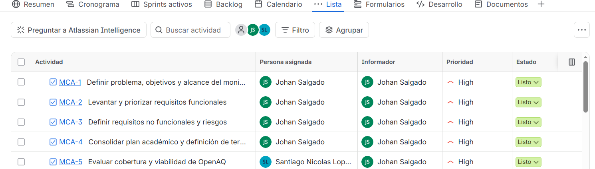
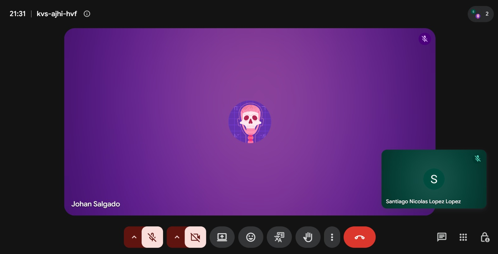
Los 8 sprints fueron ejecutados; en Aulas Virtuales se documentaron 6 porque eran los solicitados como informes individuales.
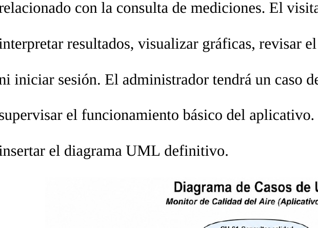
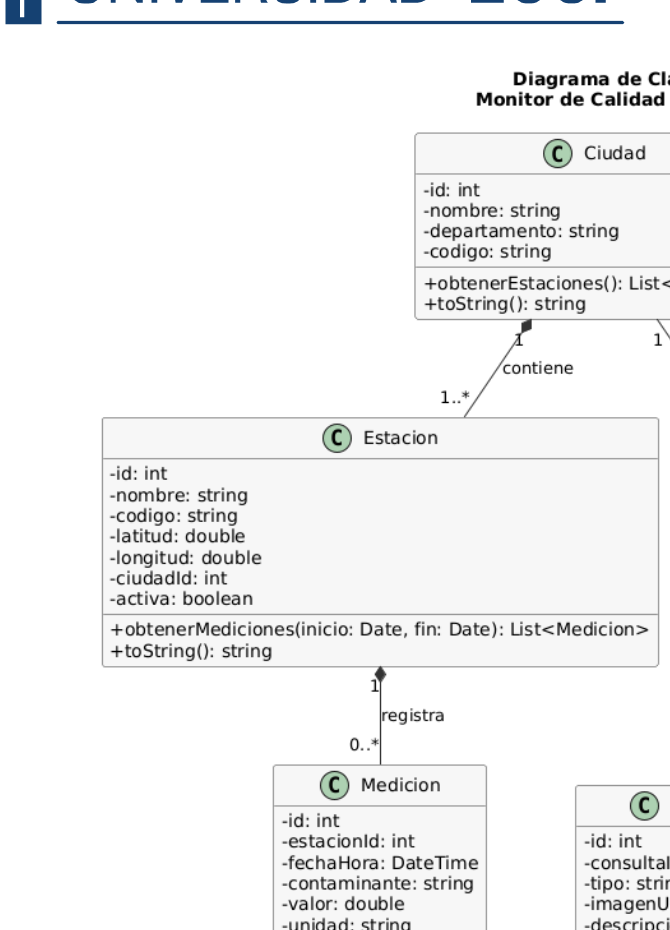
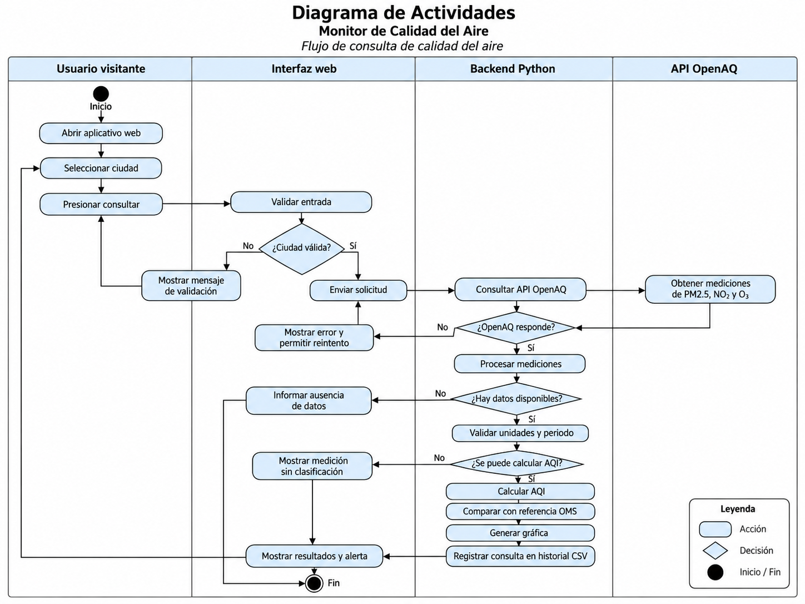
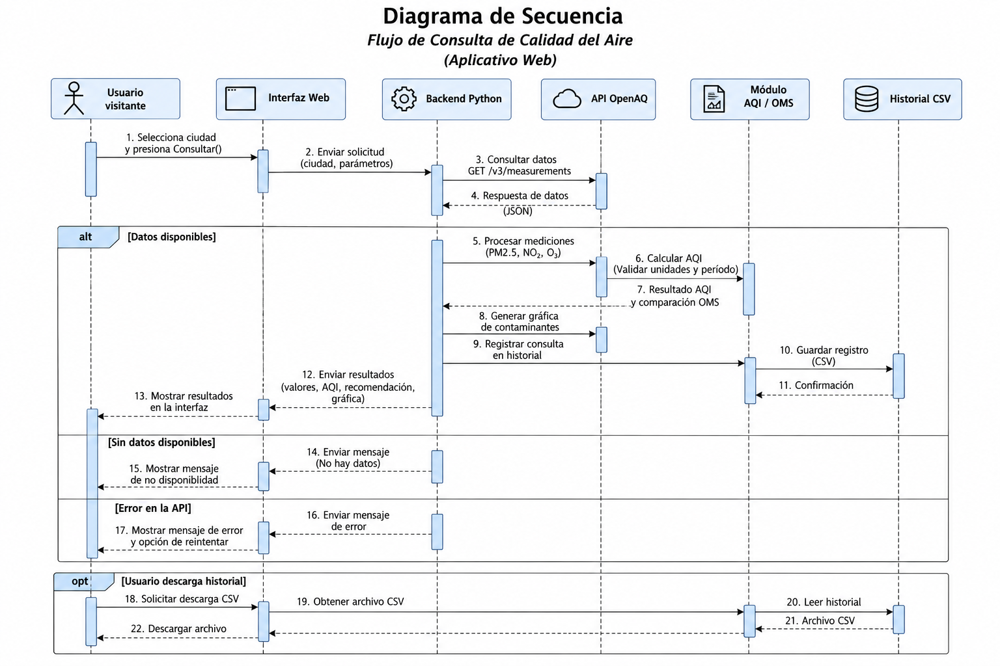
Se definieron navegación, tarjetas, historial y bloques separados para AQI y OMS.
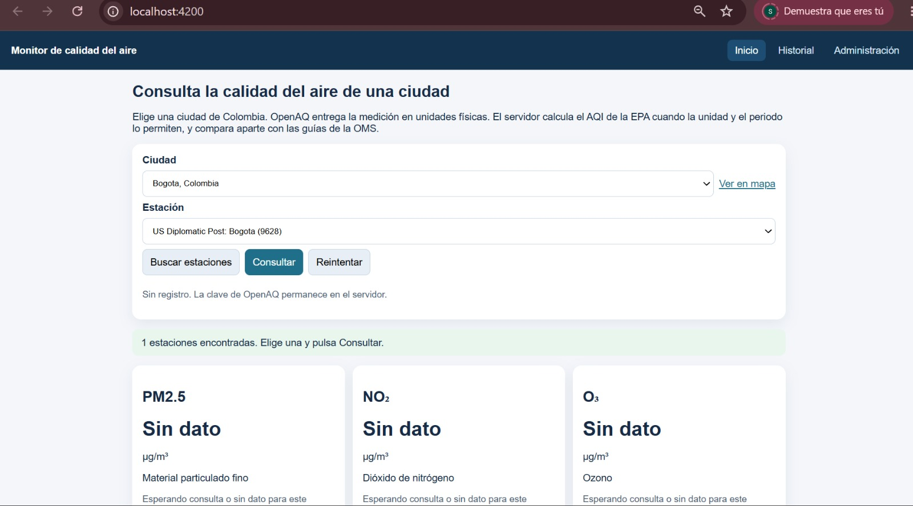
La versión final conserva el flujo de consulta y agrega backend real, historial, errores, gráfica y administración.
main.py coordina toda la aplicaciónciudad_valida()evita entradas vacías o caracteres no permitidosconsultar_ciudad()busca estaciones, obtiene lecturas y normaliza datosarmar_consulta()construye el JSON final con mediciones, AQI y OMScrear_app()crea Flask, CORS, cliente OpenAQ y almacenamiento@app.get / @app.postexpone endpoints para web, historial y reportes@app.post("/consultar")
def consultar():
cuerpo = request.get_json(silent=True)
ciudad = cuerpo.get("ciudad", "")
resultado = consultar_ciudad(
app.cliente_openaq, ciudad
)
app.almacen.guardar_consulta_ok(...)
return jsonify(resultado)cliente_openaq.py: hablar con una API real_encabezados()Lee OPENAQ_API_KEY desde el entorno y crea los headers. Así la clave no queda expuesta en Angular.
obtener()Ejecuta GET con requests.Session(), timeout y validación del código HTTP y del JSON.
obtener_todo()Recorre la paginación con while, acumula resultados y se detiene cuando ya no hay más páginas.
try:
respuesta = self.sesion.get(URL_BASE + ruta, headers=self._encabezados(), timeout=self.timeout)
except requests.Timeout as error:
raise ErrorOpenAQ("Tiempo de espera agotado") from errornormalizacion.py: limpiar antes de interpretarparsear_fecha()Usa datetime.fromisoformat() y timezone.utc. Si la fecha no tiene zona horaria o es inválida, devuelve None.
normalizar_mediciones()Aplica for, if, set() y float() para validar, convertir y detectar duplicados sin inventar valores.
aqi.py: convertir concentración en un índice válidoInterpolación lineal dentro del breakpoint correspondiente.
normalizar_unidad()homologa variantes de µg/m³, ppm y ppbtruncar()aplica la precisión exigida antes del cálculoaqi_desde_concentracion()busca el tramo y calcula el índicecategoria_aqi()traduce índice a Buena, Moderada, Dañina…calcular_aqi()selecciona el AQI más alto entre mediciones compatiblesoms.py: referencia sanitaria separada del AQIcomparar_medicion()Comprueba contaminante, periodo y unidad. Después calcula la diferencia frente al valor guía compatible.
diferencia = round(valor - valor_guia, 3)comparar_oms()Aplica la comparación a todas las mediciones y prioriza una comparación completa para mostrarla como resultado principal.
[comparar_medicion(item) for item in mediciones]almacen.py: guardar, consultar y descargar historialguardar_consulta_ok()listar_*()with self._conectar()Usa un context manager para abrir y cerrar la conexión SQLite de manera segura.
csv.DictWriterConvierte el historial a texto CSV descargable desde el navegador.
Utiliza ? y una lista de parámetros para filtros de estación, contaminante y fechas.
pandas + Matplotlib: convertir historial en información visualmediciones_a_dataframe()crea DataFrame, convierte números/fechas, elimina nulos y ordenaresumen_consulta()calcula total, promedio, mínimo y máximogenerar_imagen_historial()traza los puntos reales sin interpolar huecosgenerar_imagen_estadisticas()agrupa por contaminante y genera barrastabla = df.groupby("contaminante").agg(
Promedio=("valor", "mean"),
Minimo=("valor", "min"),
Maximo=("valor", "max")
)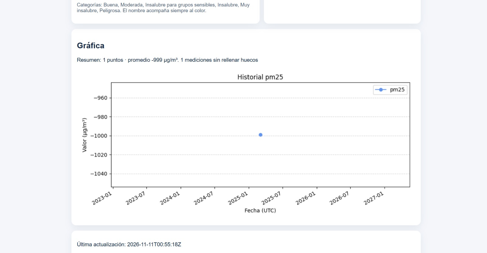
test_* en el backend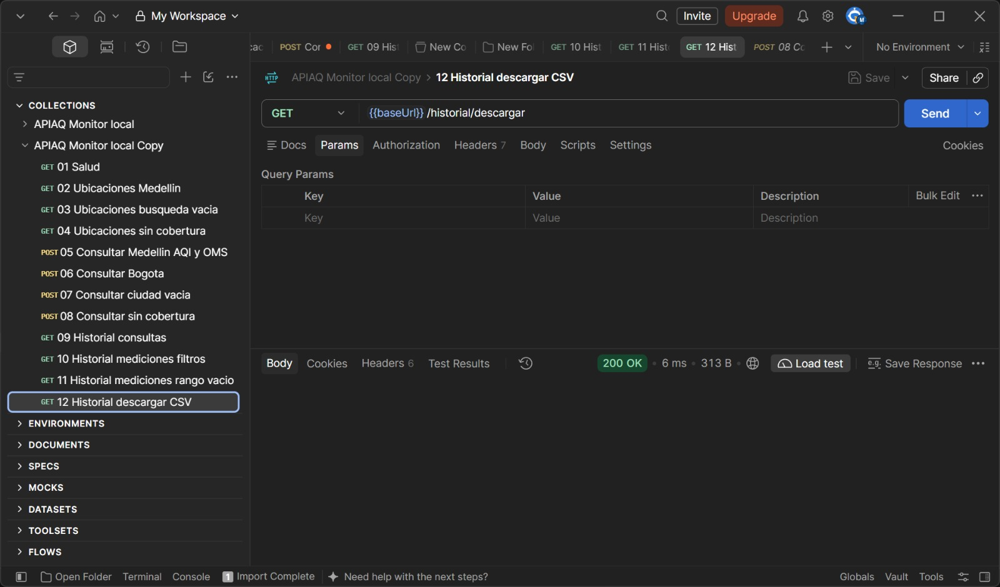
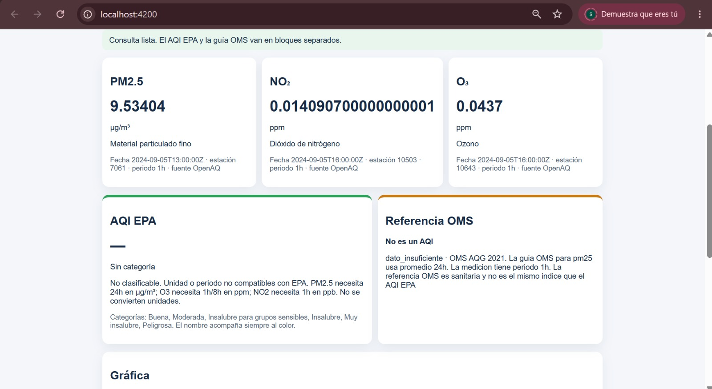
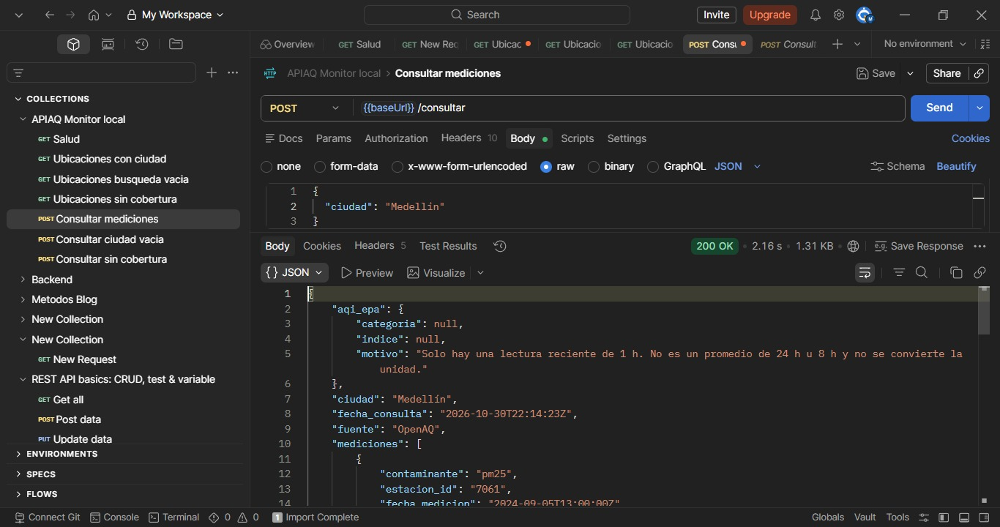
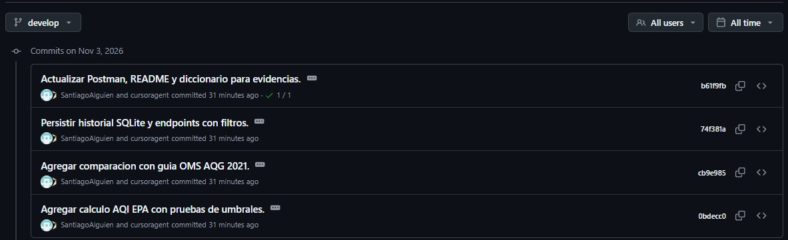
Python · Flask · SQLite · pandas · Matplotlib
Frontend-APIAQ-Front-EndAngular · TypeScript · HTML · SCSS
$ python -m venv .venv
$ .venv\Scripts\activate
$ pip install -r requirements.txt
$ python -m flask --app backend/app/main run$ npm install
$ npm start
Angular → http://localhost:4200
Flask → http://127.0.0.1:5000Trabajar con HTTP, JSON, API keys, timeout y paginación.
No todo dato puede convertirse en un índice sin revisar unidad y periodo.
Cada módulo Python tiene una función concreta y eso facilita probar y mantener.
SQLite, CSV, pandas y Matplotlib permitieron conservar y explorar el historial.
Una aplicación real debe responder bien cuando OpenAQ falla o no hay datos.
Python quedó como núcleo de lógica, mientras Angular se encargó de la experiencia del usuario.
APIAQ demostró que Python puede conectar una fuente externa, validar datos, aplicar reglas, almacenar resultados, generar reportes y sostener una aplicación web completa.